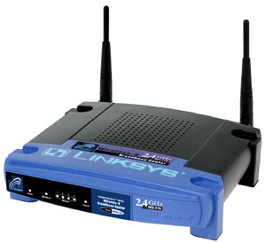
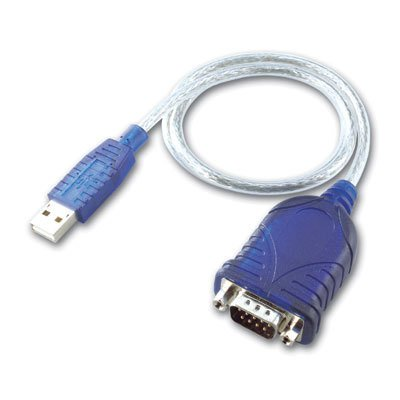
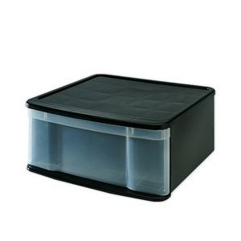

PICK ONE OF FOUR!
1. Linksys Wireless-B router/switch

2. Airlink Pre-N MIMO wireless router/switch with OpenWRT
3. usb-serial (rs 232) converter for Windows XP only

4. plastic drawer-style containers (blue, green, purple, pink)

Be the first to post a photo of the word "CRAP" written in the snow outside, or with snow, inside.